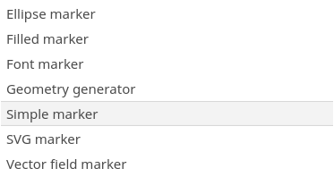

Workshop Cartografie in 
Beyond Bertin
Niene Boeijen
This presentation and materials:
github.com/NieneB/qgis-cartografie
Even voorstellen..


We make interactive maps and visualizations.


Alles open source!
Onze expertise is open {source; data; standaarden}.
Doel van deze 2,5 uur
Theorie naast Qgis functionaliteit

Tool
Vandaag Qgis
kenmerken
- Static
- Zoom level dependent
- Print?
Cartografie?!
- Grafisch & Cartografisch ontwerp
- UX design
- Film thropes storytelling concepten
- Gestalt
- Gegevenseigenschappen
- Grafische variabelen
- Thropes
- Gestalt
- Map components
- Perception, illusion, color blindness
In Qgis 3! Layer Styling Panel!!
Zet het vast klaar
View >> Panels >> Layer Styling Panel
Gegevenseigenschappen
- Punt
- Lijn
- Polygon
- Raster
polygon
line
punt
Een polygoon hoeft geen polygoon te zijn, een lijn geen lijn, een punt geen punt...

Meet Niveaus
-
kwalitatief
- Nominaal
- Ordinaal
-
Kwantitatief
- Interval
- Ratio


polygon
line
punt
Data Classification
Equal Intervals Quantiles Mean-standard deviation Maximum Breaks Natural Breaks Optimal
Visuele Variabelen
- Grootte
- Verzadiging
- Kleur
- Richting
- Vorm
- Transparantie
- Focus/onscherpte
- Schaduw

In Qgis... zo veel opties

Visual variables for uncertainty
Clarity – Crispness – Resolution – Transparency
Effecten? Meer dan Bertin!
Gestalt, Thropes
Thropes
Literature/films
used to advance a story
Dosing
reduce complexity into a set of immediately understandable chunks of information
Attention
Opacity masks
Set the mood
Setting theme characters
Gestalt
an organized whole that is perceived as more than the sum of its parts
How humans see individual components of a graphical image, then organize into a universal whole

Legibility is “the ability to be seen and understood”.
Figure ground
the spontaneous separation of the figure in the foreground from an “amorphous” background.

Balance
Connection
Map Components
Print composer >> Print Layout
Insets, mood, linearity, connection
story telling!
legend, watch the defaults!